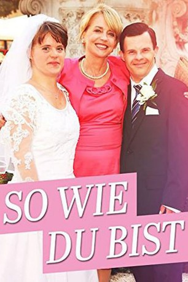
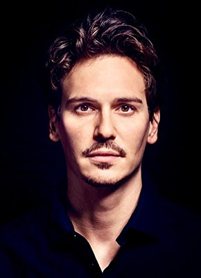

#10454 So wie du bist
 
 IMDB-Wertung: 6.4 / 10
IMDB-Wertung: 6.4 / 10  Metascore: 0
Metascore: 0 
Im Beruf war Helene beinhart. Nicht nur Angeklagte sondern auch so manche Kolleginnen sind erleichtert, dass die unnahbare Richterin endlich in den Ruhestand verschwindet. Ein Glas zu viel bei der Verabschiedung, ein Autounfall und plötzlich steht Helenes Leben auf dem Kopf. Auf Anraten ihres Anwalts kümmert sie sich um die junge Frau, deren Vater beim Unfall verletzt wurde. Michalina, die das Down Syndrom hat, spricht mit ihrer spontanen Herzlichkeit eine Seite Helenes an, die sie selbst gar nicht mehr kennt.
Jahr: 2012
Dauer: 87 Minuten
FSK:
Land: Österreich Studio: Dor Film ProduktionsgesellschaftTonspuren:
Untertitel:
Auflösung: 720p (1280x720) Größe: 1699 MB
Genre: Drama
Regisseur: Wolfgang Murnberger
Drehbuch: Uli Brée
Soundtrack:
Darsteller:
- Nicole Beutler als Andrea Mayr
 Karl Fischer als
Karl Fischer als - Karlheinz Hackl als Edgar Mück
 Petra Morzé als Sophia Mück
Petra Morzé als Sophia Mück- Cornelius Obonya als Charly
- Maciej Salamon als Billeteur
-  Christopher Schärf als Rupert Offer
 Tim Seyfi als
Tim Seyfi als - Dominic Marcus Singer als Segway-Driver
- Florian Moses Bayer als Tierhändler
- Thomas Declaude als
- Melanie Gemeiner als Astrid
- Juliane Götze als Michalina Sedlacek
- Franz Josef Koepp als
- Hanus Polak Jr. als Sekretär des Bischofs
- Lukas Resetarits als Bruno Sedlacek
- August Schmölzer als Herbert Eichner
- Gisela Schneeberger als Helene Offer
- Rita Sereinig als Martha
- Sebastian Urbanski als Sebastian Mück
Datei: X:\2012(N-Z)\So wie du bist (2012, FSK, 1280x720).mkv seit 09.01.2019
Festplatte: HD 2012(N-Z)-2013(A-H)
 Es gibt insgesamt 138 Filme in der Gruppe '2012(N-Z)'
Es gibt insgesamt 138 Filme in der Gruppe '2012(N-Z)'